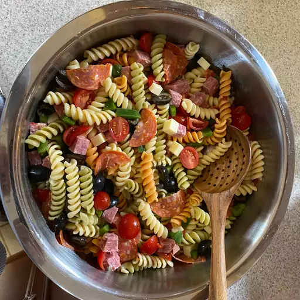

Awesome Pasta Salad Recipe

A quick and enjoyable salad recipe.
This recipe uses spiral fusilli pasta but you can use whichever type you want.
Ingredients
- 1 (16 ounce) package fusilli pasta
- 3 cups cherry tomatoes, cut in half
- half pound provolone cheese, cut into cubes
- half pound salami, cut into cubes
- Quarter pound sliced pepperoni, cut in half
- 1 large green bell pepper, cut into 1 inch pieces
- 1 (10 ounce) can black olives, drained
- 1 (4 ounce) jar pimentos, drained
- 1 (8 ounce) bottle italian dressing
- Bring a large pot of lightly salted water to a boil. Cook fusilli in the boiling water, stirring occasionally, until tender yet firm to the bite, about 12 minutes. Drain.
- Combine fusilli with tomatoes, cheese, salami, pepperoni, green pepper, olives, and pimentos in a large bowl. Pour in salad dressing; toss to coat.
- Serve and enjoy!